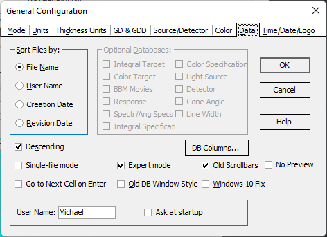

Sorting Order, User Name, and Database view options
When displaying the contents of a database, you can sort the files according to:
File Name
User Name
Creation Date
Revision Date
This Configuration Option allows you to choose your preferred sorting order. Additionally, you have the option to reverse the sorting order by checking the Inverse Order box.
This dialog provides the ability to:
Change the User Name during the OptiChar session, even if the Setting User Name dialog is disabled.
Restore the Setting User Name dialog at startup by checking the Ask at startup checkbox.
The Go to Next Cell on Enter option enhances your spreadsheet editing experience. If activated, pressing the Enter key will automatically move the focus to the next editable cell.
The Expert mode activates all databases and most advanced OptiChar commands (with the exception of Scientific commands). If the Expert mode is not active, it is possible to control the visibility of particular databases manually, arranging the user interface according to current problems.
Old scrollbars checkbox activates the use of old (classical) scrollbar style everywhere in OptiChar.
Old DB Style activates the view of the database window based on tabs below the database file list. The new style uses a tree view list of the databases in the left part of the Database window.
Windows 10 Fix option removes the gaps between windows at Windows 10/11 OS when tiling of windows is applied or windows are moved on the screen with the mouse.
No Preview allows for completely hiding and disabling the Database Preview subwindow. This can be necessary on small screens.
DB Columns button opens the Configure Database Columns dialog.
